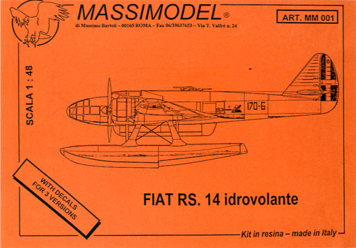
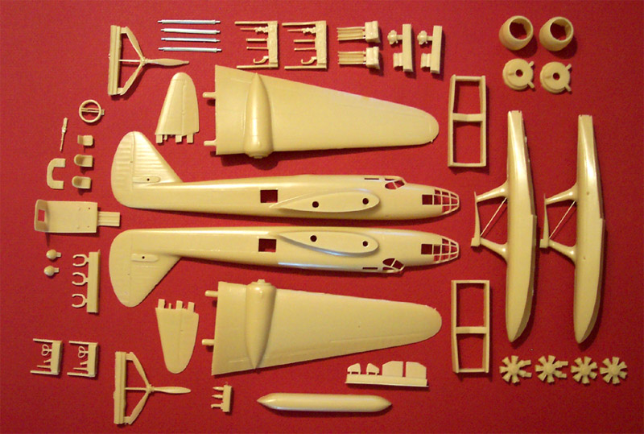
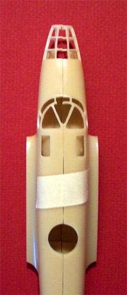
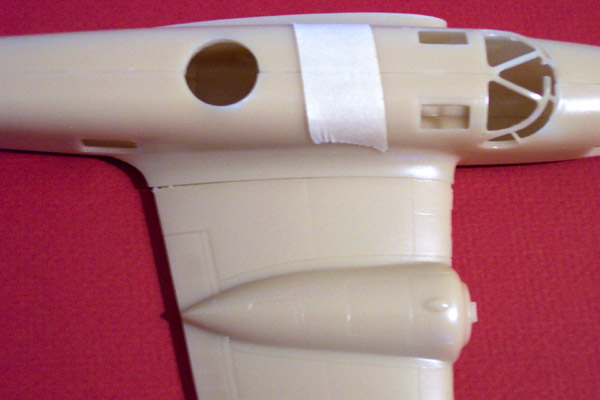
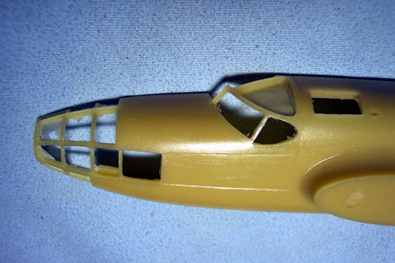
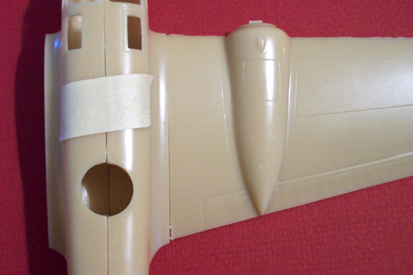

{kind=link}
{kind=link}
{kind=link}
{kind=link}
{kind=link}
{kind=link}
{kind=link}
{kind=link}


Massi Models 1/48 Fiat RS.14 Resin MSRP $159.95 USD

Images and text copyright © 2003 by Matt Swan
A Brief History
In March 1937 the Italian Air Ministry issued a call for bids for a “fast maritime reconnaissance seaplane”. The current reconnaissance plane (Cant Z 501) was found to be unable to meet any of the requirements for open sea missions besides range. The call for bids specified that the wingspan not exceed 22.5 meters and the height not be greater than 5.4 meters so that existing hangers could accommodate the craft. The Air Ministry was asking for a maximum speed of at least 217 mph at 3280 feet and a cruising speed of 186 mph.
The CMASA factory (Costruzioni Meccaniche Aeronautiche Societa’ Anonima) had already gained a good degree of experience with flying boats from building the Dornier Wal aircraft under license and won the bid with the RS 14 (Ricognizione Stiavelli 14) which featured an entirely stressed-skin metal structure and racer like look. The floatplane aspect was probably influenced by the recent Schneider Trophy competition and the Heinkel He 111 most likely influenced the glass nose.
The RS 14 prototype was first flown in 1939 with a maximum speed of 254 mph reached at 13120 feet. This craft even was able to perform loops. By December 1941 the first maritime unit was equipped with this aircraft in a training capacity and the aircraft became fully operational by early 1942. Ultimately only about 57 aircraft ever reached operational status and by the time of the armistice in 1943 only 28 were serviceable. These aircraft were reorganized to fly antisubmarine patrols for the allies and later were switched to air/sea rescue and liaison missions. In 1948 all remaining aircraft were struck off and scrapped.
The Kit

This is an all resin kit and weighs in at three pounds on the dot. The kit includes 64 resin pieces cast in a light tan resin that is just soft enough to whittle with a razor knife. There are four white metal struts for the floats and three sheets of clear acetate parts for the various canopy  panes (20 pieces). The resin pieces display excellent casting with nicely engraved panel lines and, for the most part, very small pour stubs. A few pieces have large pour stubs like the radiator housings and some other engine parts. Both the propellers were bent and will need a hot water treatment to straighten them out. My kit has a very small piece broken off from the pilot’s canopy frame but that should be repairable with no trouble. There is a fair amount of fine flash around the nose framing but all of the other resin pieces are nearly 100% free of flash. You may click on the picture to the left for a larger image.
I examined the resin parts with great care and could fine no pinholes in any of the parts. There were a few internal air bubbles visible but nothing that would interfere with the construction or painting of the model. The clear acetate parts have a very slight milky look to them that may or may not come out with a treatment of Future. The design of the clear parts has them being placed inside the resin framework in sections that will be inset so as to keep the exterior lines clean. They seem to be thin enough to achieve this result but it is obvious that care will have to be taken when they are installed. They are intended to be put in place after the fuselage is assembled.
After cleaning up the fine mold line that ran around the perimeter of the fuselage halves I taped them together to check the fit. They have a very slight, almost un-noticeable arch to them that could be corrected with sanding or preferably a hot water treatment. On one fuselage half the wing mounting holes had not been all drilled out. This created about a half an hour of work to drill the hole and ensure that it had the proper alignment. The wings feature two large mounting stubs and slide into place quite easily and fit very well. It will not be necessary to do much gap filling on the wing joint.
The interior is somewhat sparse but I purchased the Ali D’Italia Fiat RS 14 booklet, which has many excellent interior photographs and will be a great aid in scratch detailing the interior. I imagine that the interior could be done straight from the box and be acceptable but for a kit that carries this kind of price-tag (MSRP $159.95 USD) I would have expected a little more under that canopy.
You may click on the pictures below for larger images.



The decals appear to be perfectly in registry and seem to have very good color density. The kit provides decals for three different aircraft but seems to lack any maintenance stencils. That may be accurate though, as I study the photographs of actual aircraft being serviced I do not see any stenciling. The kit also includes an 8-page instruction booklet with very nice exploded assembly views and a brief color chart that includes Federal Standard numbers, Gunze-Sangyo, Humbrol, Testors and MKRA paint numbers. Unfortunately it only lists four colors so many smaller details will be up to the modeler to determine the correct color.
Conclusions
This looks to be a very exciting kit. Care needs to be taken when cleaning parts up, especially around the fine interior brace on the floats. From all appearances it should build up into an excellent representation of a rare and unusual seaplane. I strongly recommend that the reference booklet Ali D’Italia Fiat RS 14 be purchased with the kit. Review kit courtesy of my pocket.